📑 文章目录（18 节）
本文将围绕 IIDX（beatmania IIDX / 弐寺）专控所使用的三和按键，全面讲解它与海外手台（如 Phoenixwan 等）标配的 DAO 按键之间的区别、购买方式、静音改造以及自行换装三和按键的具体方法。
笔者本人是将 Phoenixwan 的 7 个按键自己换装成了三和按键在使用。文中也附上了将三和按键与 DAO 按键并排对比的照片和相关说明。
- 三和按键是街机框体同款按键，按压手感与 DAO 按键略有不同
- DAO 按键素质相当优秀，对绝大多数人来说用 DAO 按键就完全够了
- 如果执着于竞技规格（与街机框体相同的手感），建议先买 DAO 按键版本，之后再自己换装成三和按键
- 如果介意打键噪音，可以通过换用三和静音按键，或垫高 DAO 按键底部来降低音量
什么是三和按键（IIDX）
三和按键是由街机部件厂商三和电子生产的、与 IIDX 街机框体完全相同的键盘按键，型号为 OBSA-45UK（45mm 长方形按键）。
街机框体的竞技规格配置为 50g 弹簧 ＋ 欧姆龙（OMRON）微动开关 VX-01-1C23。只要给三和按键装上这套弹簧和微动开关，就能获得与机厅框体几乎一致的按压手感。
另一方面，Phoenixwan 等海外专控标配的是 DAO 按键（由 DJ DAO 生产的兼容按键）。其外形和尺寸几乎完全相同，可以直接互换安装。
按压手感的区别
DAO 按键与三和按键在影响按压手感的构造上存在几处差异。把两者放在一起对比后，主要发现了以下 3 点：
- 弹簧槽（弹簧收纳部分）的长度
- 按键的键程
- 与微动开关之间的距离
弹簧槽的长度
虽然从照片里不太容易一眼看清，但DAO 按键放置弹簧的空间长度更短。
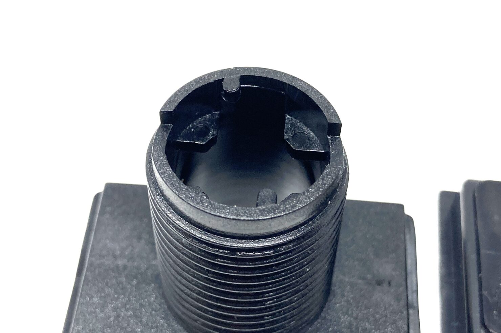
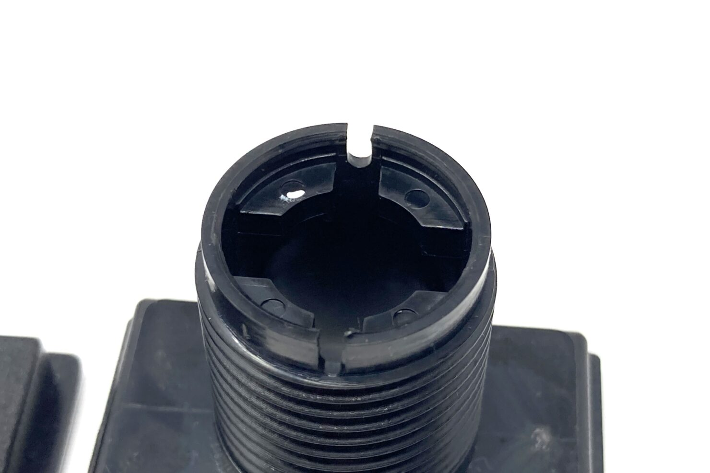
装入同一根弹簧时，DAO 按键中的弹簧会被压缩得更紧，因此按起来会感觉更硬。
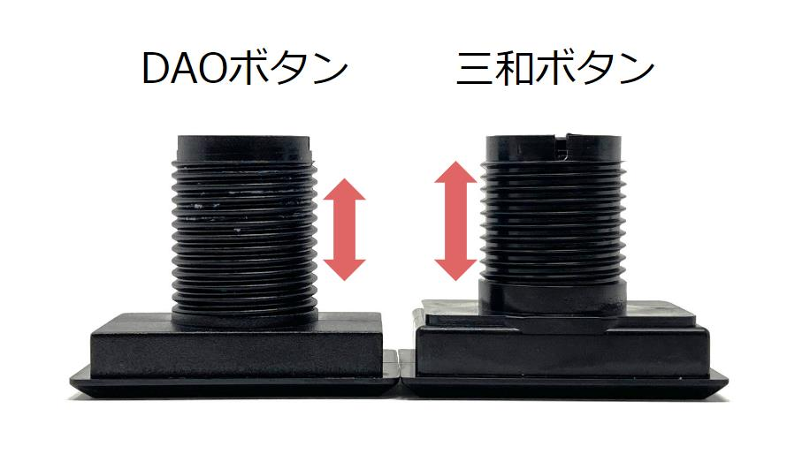
按体感来说，装同样的弹簧和微动开关时，DAO 按键大约会重上 20～30g 左右。笔者用 DAO 40g 弹簧 ＋ VX-01-1A3 的组合，感觉甚至比 Lightning 框体的竞技规格（50g 弹簧 ＋ VX-01-1C23）还要略硬一点。
如果想用 DAO 按键贴近竞技规格的手感，或许搭配 20g 弹簧会更接近。顺带一提，大概也是出于这一构造原因，DAO 按键标配的 40g 弹簧本身就比三和的弹簧略短一些。
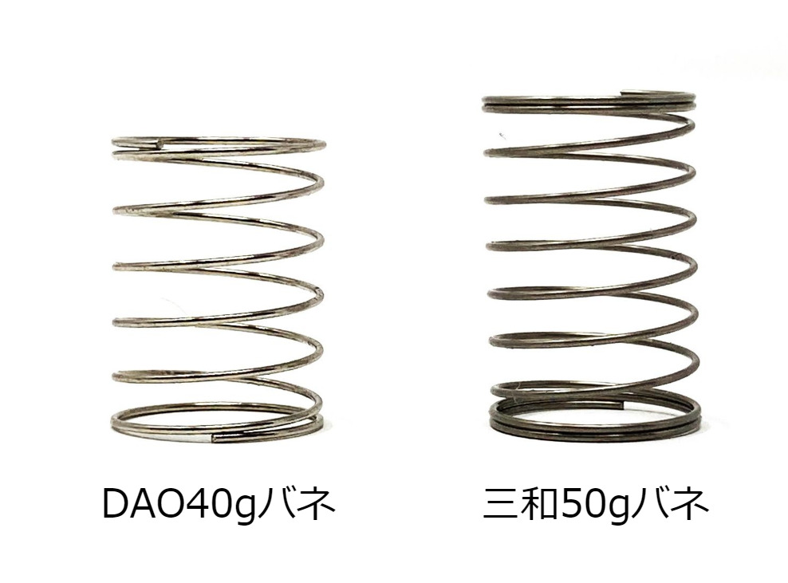
按键的键程
DAO 按键按下时的下沉深度比三和按键深 0.5～1mm 左右。
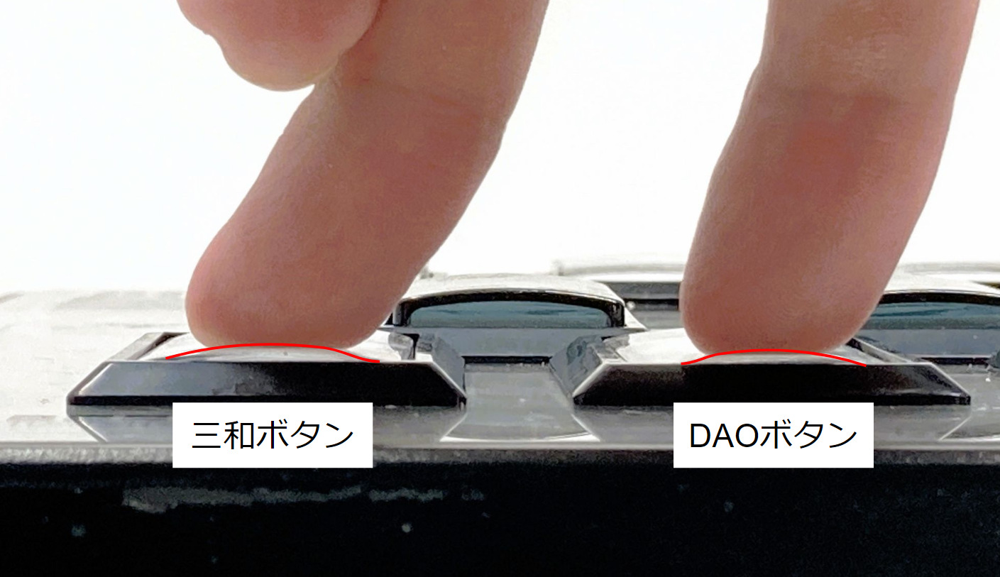
原样直接使用的话，按键边框边缘容易硌到手指、产生违和感，因此建议在按键底座（承托槽）贴上 0.5～1mm 厚的毛毡或橡胶片来垫高底部，这样同时还能起到静音改造的效果。
与微动开关之间的距离
DAO 按键的按键底脚（触发脚）与微动开关之间的距离比三和按键更近。
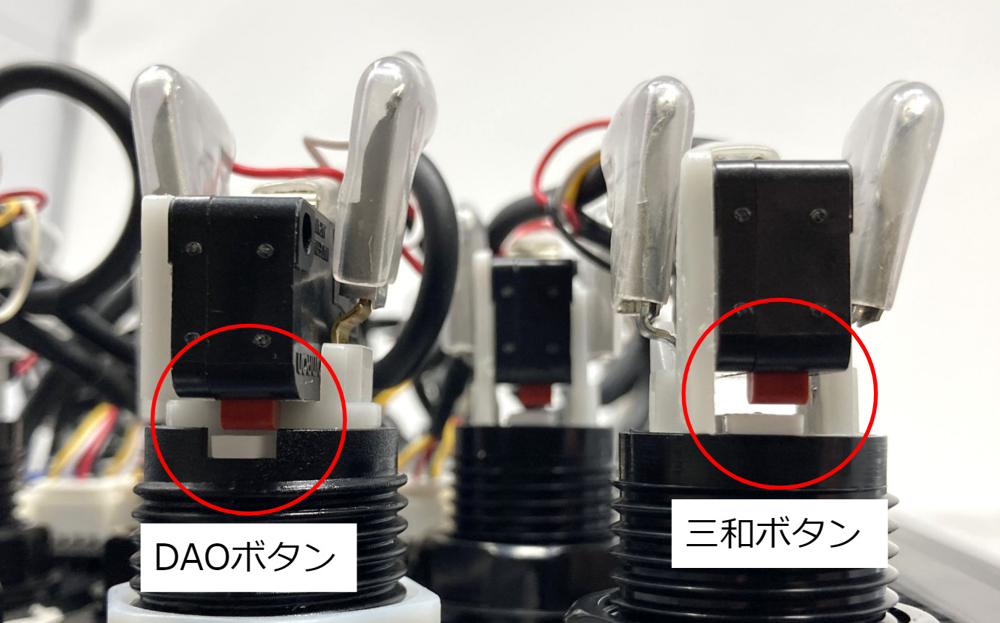
正因如此，DAO 按键即使贴毛毡或橡胶片垫高了底部，也依然能够正常触发微动开关。但如果给三和按键做同样的垫高改造，微动开关就会按不到底，因此还必须额外在按键底脚上贴橡胶片之类的材料把它加长。
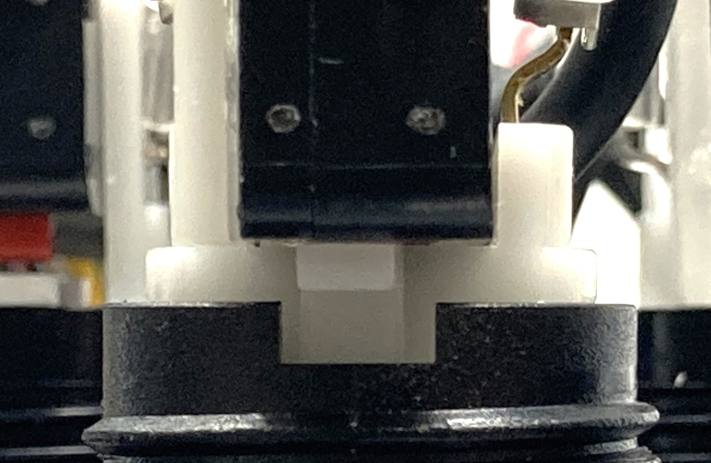
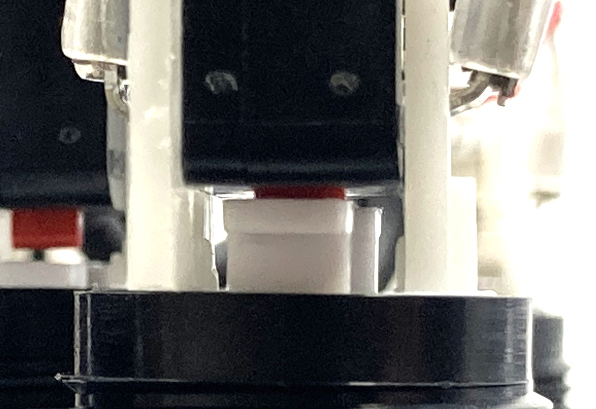
题外话，也许是因为三和按键的底脚和微动开关之间隔着一段空隙，按下去的时候比较容易把弹簧的弹力和微动开关的段落感分成两段来感受。这属于个人喜好问题，单论按压手感本身，笔者其实更喜欢 DAO 按键。
打键音的区别与静音改造
打键音方面，感觉上DAO 按键低频声更重，而三和按键高频声更脆亮，整体音量大小倒没觉得差多少。
左侧为三和按键，右侧为 DAO 按键如果想把声音改轻，主要有以下 2 种方法：
使用三和静音按键
三和电子官方也推出了 IIDX 专用的静音按键（OBSAE-MB45UK-SA01）。出厂就已经装好了 VX-01-1C23 微动开关和 50g 弹簧（OBSA-SP），到手即可直接装上使用。
售价为单个 2,508 日元（含税，截至 2026 年 10 月官方商城价格），大概是普通三和按键的两倍。不带 LED 灯，颜色提供白色和黑色（烟熏黑）两种。
垫高 DAO 按键底部
不想多花钱又想静音的话，采用前面介绍过的垫高 DAO 按键底部是最省事的做法。由于 DAO 按键离微动开关很近，垫高后依然可以直接正常触发。
而普通三和按键在垫高后还需要额外改造按键底脚，因此如果你在意噪音问题，建议选择可以通过垫高静音的 DAO 按键，或者直接买三和静音按键。
微动开关安装结构与灯座的区别
在拆装微动开关和日常维护方面，DAO 按键要方便得多。
三和按键的微动开关拆的时候必须用力往外拔，装的时候也要从上方使劲往下硬按。如果没完全卡到位，游玩时的震动甚至可能导致它松脱。
DAO 按键则是逆时针一拧就能拆下，顺时针一拧就能装上，维护非常轻松，也几乎不用担心打歌途中松动脱落。
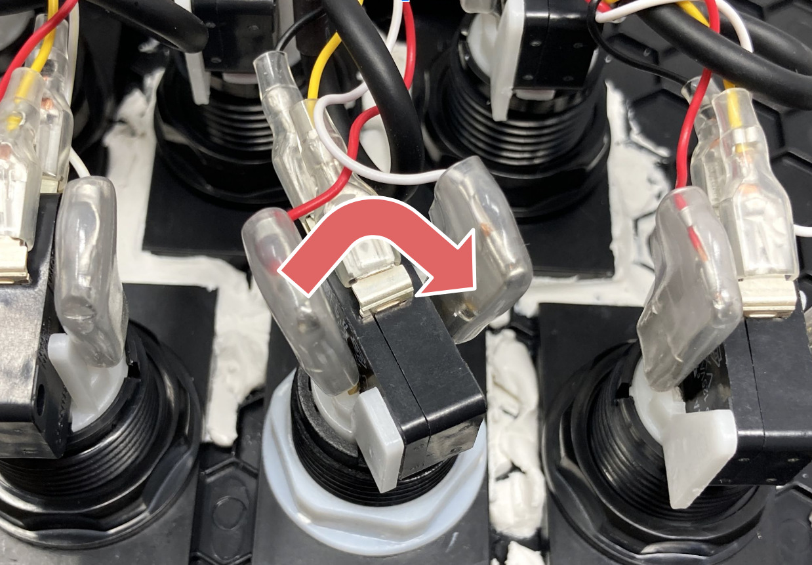
灯座（Lamp Holder）的外形略有差异，但端子规格基本一致，插 LED 灯珠的插槽形状也是一样的。
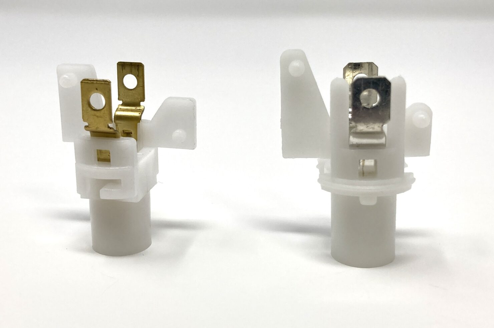
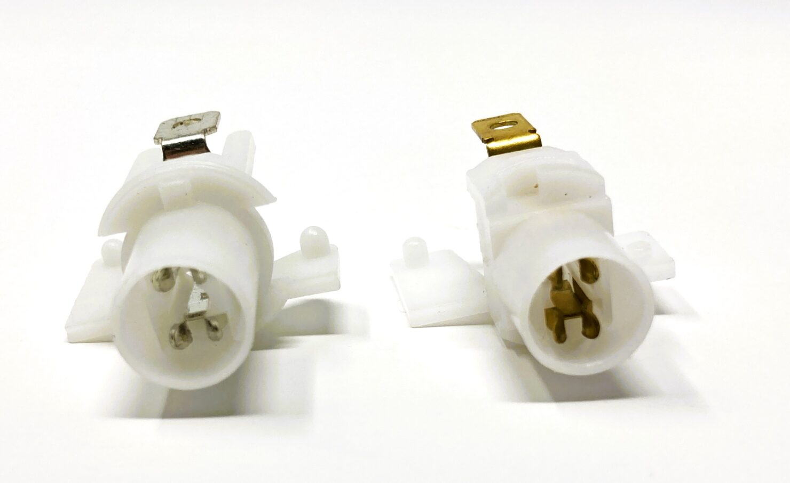
因此，DAO 按键上的 LED 灯珠可以直接拔下来沿用到三和按键上，直接插到底就行了。注意如果正负极插反了就不会亮，遇到不亮时请检查一下方向。
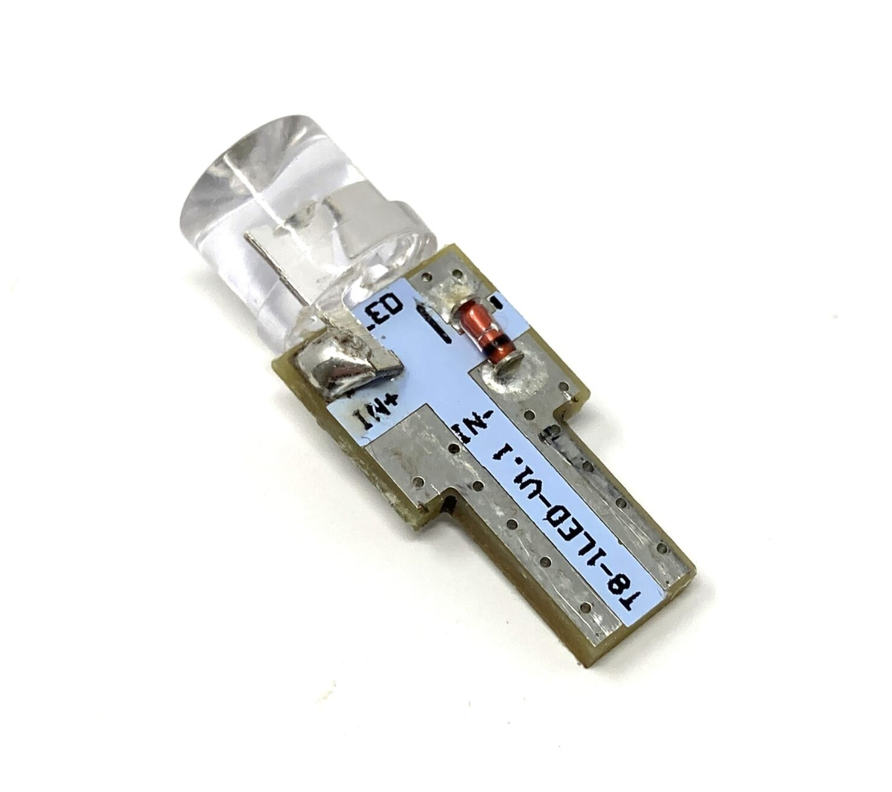
外观的区别
两者在外观上几乎看不出区别，做工和高级感方面也没觉得有什么差距。只有烟熏黑（黑键）方面，DAO 按键的颜色稍微深那么一点点。
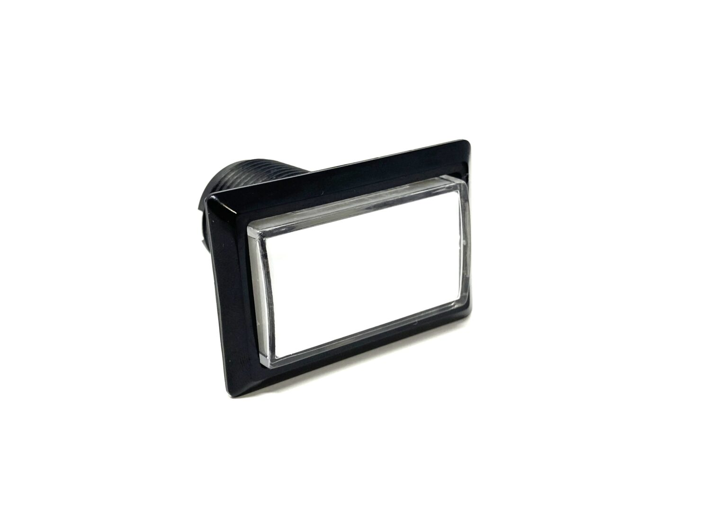
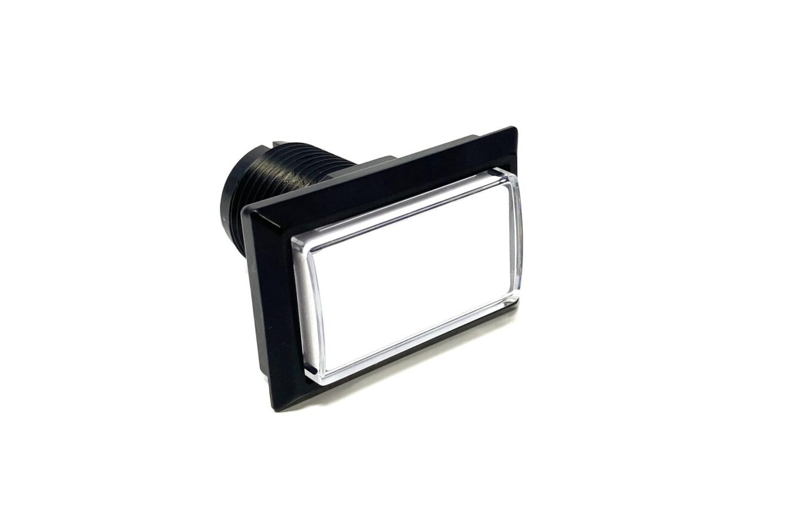
DAO 按键与三和按键，到底该选哪一个？
建议先买标配 DAO 按键的版本，如果实在不满意，之后再自己换装成三和按键。
笔者用 DAO 按键打了大约半年，觉得它素质相当出色、性价比很高，绝大多数玩家用 DAO 按键就足以满意。
| DAO | 三和 | |
|---|---|---|
| 价格 （单个・含税） | 900 日元 | 1,320 日元起 |
| 按压手感 （同款弹簧与微动） | 略有差异 | 机厅原装规格 |
| 维护便利度 | 容易维护 | 较难拆装 |
| 静音改造 | 垫高底部即可 | 有官方静音按键 |
下单购买 Phoenixwan 时，如果直接把出厂预装按键选成三和按键，原来的 DAO 按键是不会附送给你的。相反，在同一笔订单里额外加购三和按键套件反而更便宜，而且还能把原本的 DAO 按键留在手里当备用。因此加购套件买回来、之后自己换装会更划算（具体加价见下方“购买专控时选配三和按键”一节）。
三和按键的购买方式
入手三和按键主要有以下 3 种途径：
在三和电子官方商城购买
最稳妥的渠道是三和电子官方商城（sanwa-d.shop）。按键本体（OBSA-45UK）单个 1,320 日元（含税）起，根据是否带灯及灯泡类型价格会有所变化。50g 弹簧（OBSA-SP）也可以在同一家商城一起买到。
下单选购按键时，请务必注意以下几点：
- IIDX 专用型号是45mm 长方形（OBSA-45UK），不要误买成圆形按键
- 出厂标配的微动开关和弹簧并非竞技规格，需要另行准备 50g 弹簧和 VX-01-1C23 微动开关（笔者的微动开关也是单独购买的）
- 如果打算沿用 DAO 按键原本的 LED 灯，选“无灯”规格即可
购买专控时直接选配三和按键
购买 Phoenixwan 时，可以在下单界面选配三和按键。如果在 DJ DAO JAPAN 购买 PHOENIXWAN Entry Model，有以下 2 种选法：
- 出厂预装直接更换为三和按键：＋15,000 日元，不会附带原装 DAO 按键
- 额外加购三和按键改装套件：＋11,750 日元（若选 100g 弹簧则为 ＋11,000 日元）。手台本体按 DAO 按键发货，三和套件由日本国内另行寄出
以上两种方式均不含微动开关费用。OMRON 的 VX-01-1C23 微动开关若选择出厂预装需 ＋5,000 日元，作为套件加购则为 ＋2,650 日元（截至 2026 年 11 月）。
购买日本国内代理商的三和套装
如果你手里已经有专控了，直接购买 DJ DAO 日本国内代理商（DJ DAO JAPAN）的三和按键套装最为省事。IIDX 套装包含 7 个三和按键（4 白 3 烟熏黑），售价 10,500 日元且日本国内免运费，弹簧可在 20g、50g、60g、100g 中任选。套装不含 LED 和微动开关，LED 可沿用原 DAO 按键上的，微动开关则需另备（截至 2026 年 11 月）。
从 DAO 按键自行换装三和按键的方法
换装过程并不算难。笔者自己把7 个按键全部换成三和按键一共花费了 10,527 日元（含消费税、运费及 50g 弹簧费用）。
- 打开专控面板
先拔掉 USB 线，再按下机身背面的按钮即可卸下按键面板。面板是用磁铁吸附固定的，不需要任何工具。详情可查看 GAMO2 官方说明。
- 从 DAO 按键上拆下微动开关和 LED
微动开关逆时针旋转即可卸下，LED 直接从灯座里拔出即可。电线端子保持连接状态不动也没关系。
- 卸下 DAO 按键并装入三和按键
拧下 DAO 按键背面的塑料螺母，将其取出。把三和按键放入同一个孔位，再拧紧螺母固定。
- 装入弹簧与微动开关
给三和按键放进 50g 弹簧，然后将微动开关从上方用力按到底。如果没卡紧，游玩时可能会松脱，请一直按到听见“咔哒”一声卡到位为止。
- 插回 LED 并测试通电
把之前从 DAO 按键拔下来的 LED 插到底。盖上面板前先接上 USB，确认所有按键都能正常触发并亮灯。如果有按键不亮，把 LED 拔出来调转方向重新插上即可。
关于三和按键的常见问题
换成三和按键后，分数或判定会改变吗？
更换按键不会改变游戏本身的判定。改变的是按压手感，它可以减少你在机厅框体和家中专控之间来回切换时的违和感。如果只在家里玩，用 DAO 按键基本不会有什么困扰。
三和按键在哪里可以买到？
可以在三和电子官方商城（sanwa-d.shop）购买。IIDX 适用的型号是 45mm 长方形的 OBSA-45UK，竞技规格的 50g 弹簧也可以在同一商城买到。
DAO 按键的 LED 可以用在三和按键上吗？
可以。两者的灯座 LED 插槽形状相同，直接拔下来插进三和按键里就行。如果不亮，把正反方向调换一下即可。
有什么方法可以让三和按键更安静吗？
最省心的方法是直接使用三和电子的静音按键（OBSAE-MB45UK-SA01）。如果想通过垫高底部来给普通三和按键静音，由于会导致微动开关无法按到底，还必须额外对按键底脚进行加长改造。
总结
三和按键是与 IIDX 街机框体相同的按键，和 DAO 按键相比，在弹簧压缩状态、键程以及与微动开关的距离等方面略有不同。不过 DAO 按键本身的素质已经非常优秀，因此推荐先用 DAO 按键上手，等日后真的想要追求机厅竞技规格的手感时，再自行换装成三和按键。
换装步骤其实并不复杂，如果你在意在家和在机厅的手感差异，不妨动手尝试一下。
💬 读者评论与作者答疑（1 组对话）